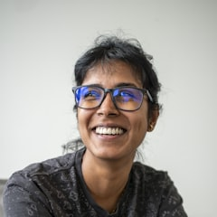

P1 · Erstkontakt, Käufer
Die Agenturleitung
kein Entwickler
will
- Prozesse automatisieren, Kosten senken
- nicht auf Entwickler warten
- Kleines selbst ändern: „Button gelb statt grün“
fürchtet
- Kontrollverlust
- kaputte Anwendung
- KI-Hype ohne Ergebnis
überzeugt durch
- ein Mensch an jeder Station
- nichts geht live ohne Freigabe
- die Linie passt sich an
App: Workspace-Admin oder Team-Lead, als Reviewer eingetragen. Merge im Terminal oder GitLab-MR.
erste AktionStart a free trial · kauft Hosting und Add-ons